Теоретическая часть
В WinForms есть стандартные события для мыши, которые используются в программе для создания графического редактора:
- ▸MouseDown — возникает при нажатии кнопки мыши. Это событие сигнализирует о начале рисования, когда пользователь нажимает кнопку на панели рисования.
- ▸MouseMove — возникает при перемещении курсора мыши. Если кнопка мыши зажата (рисование активно), то при движении курсора происходит прорисовка линий.
- ▸MouseUp — возникает при отпускании кнопки мыши. Это событие завершает процесс рисования.
Эти события позволяют
отслеживать действия пользователя и получать координаты указателя через объект MouseEventArgs,
который содержит информацию о текущем положении курсора на экране.
DrawLine
класса Graphics. Он рисует отрезок между двумя точками. В контексте программы этот метод
применяется для соединения предыдущей позиции курсора с текущей во время движения мыши.
Таким образом, из множества маленьких отрезков формируется непрерывная линия,
повторяющая траекторию движения курсора.
Глава 1 — Создание интерфейса
Самостоятельно создайте проект Windows Forms (как в прошлых уроках).
Форма и панель для рисования
Создаём форму Form1. На форму добавляем элемент Panel
(назовём panelDraw)
— это будет «холст» для рисования. Установим panelDraw.Dock = Fill и
фон белый, чтобы было удобно рисовать.
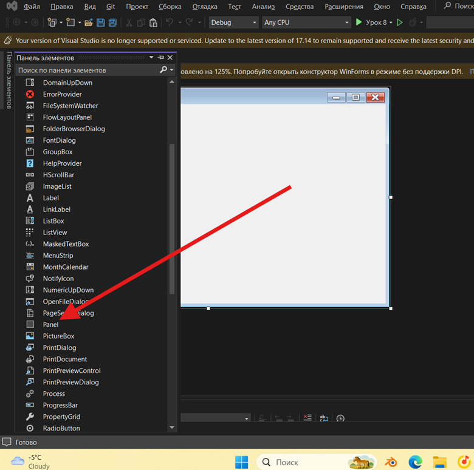
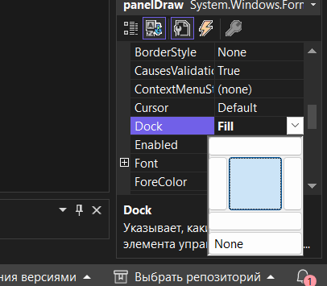
Кнопка выбора цвета
Добавляем кнопку buttonColor (например,
вверху формы). При клике по ней будем открывать ColorDialog. Можно присвоить ей текст «Цвет» или
показать текущий цвет через BackColor.
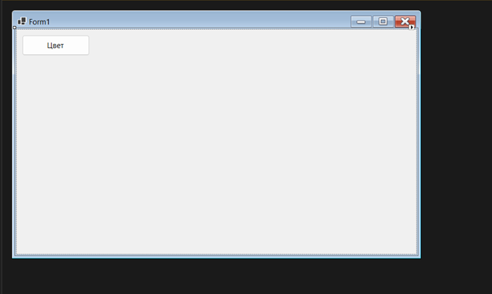
Инициализация переменных
В коде класса Form1 (нажимаем правой кнопкой мышки и переходим в код) заводим переменные:
private bool drawing; // флаг рисования (true - рисуем, false - нет) private Point last; // предыдущая позиция курсора private Color color = Color.Black; // текущий цвет рисования private Bitmap bmp; // холст (растровое изображение) private Graphics g; // графический контекст для рисования на холсте
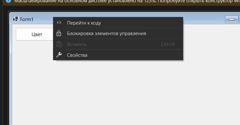
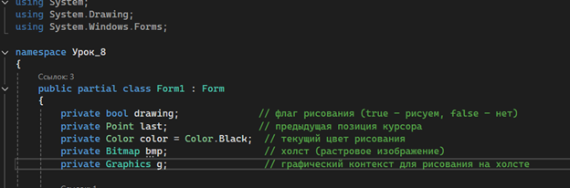
Их будем использовать в событиях мыши.
Регистрация событий
В коде связываем события панели: MouseDown, MouseMove, MouseUp с нашими обработчиками (panelDraw_MouseDown, panelDraw_MouseMove, panelDraw_MouseUp). Также в конструкторе формы происходит начальная настройка программы рисования. Создаётся растровое изображение (Bitmap), которое будет служить холстом, и графический контекст (Graphics) для рисования на этом холсте. Холст заливается белым цветом. Затем все необходимые события панели подключаются к соответствующим обработчикам, чтобы программа реагировала на действия пользователя (рисование мышкой) и правильно отображала содержимое холста при перерисовке.
public Form1() { InitializeComponent(); bmp = new Bitmap(panelDraw.Width, panelDraw.Height); g = Graphics.FromImage(bmp); g.Clear(Color.White); panelDraw.Paint += PanelDraw_Paint; panelDraw.MouseDown += PanelDraw_MouseDown; panelDraw.MouseMove += PanelDraw_MouseMove; panelDraw.MouseUp += PanelDraw_MouseUp; }
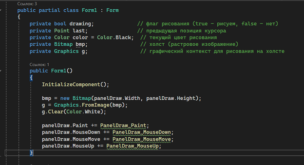
Глава 2 — Рисование мышью
Обработчик события Paint — этот метод вызывается автоматически каждый раз, когда необходимо перерисовать содержимое панели. Здесь мы просто выводим на панель наш сохранённый холст (Bitmap), чтобы рисунок всегда оставался видимым.
private void PanelDraw_Paint(object sender, PaintEventArgs e) { e.Graphics.DrawImage(bmp, 0, 0); // отрисовываем содержимое холста на панели }
Объяснение: это обработчик события Paint панели panelDraw. Когда системе
требуется перерисовать панель (например, при появлении окна после сворачивания или при
перемещении), этот метод вызывается автоматически. Метод берёт сохранённое растровое изображение
bmp (наш холст) и
выводит его на поверхность панели, начиная с координат (0, 0). Благодаря этому рисунок не
исчезает при перерисовке окна.
Логика рисования
При нажатии кнопки мыши (MouseDown) начинаем рисовать: устанавливаем
drawing = true и
запоминаем начальную точку: last = e.Location;
private void PanelDraw_MouseDown(object sender, MouseEventArgs e) { drawing = true; last = e.Location; }
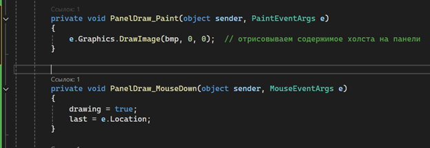
Рисуем линию на MouseMove
Пока drawing == true, в
каждом событии MouseMove рисуем линию от предыдущей точки до текущей:
private void PanelDraw_MouseMove(object sender, MouseEventArgs e) { if (!drawing) return; using (Pen pen = new Pen(color, 2)) { g.DrawLine(pen, last, e.Location); } last = e.Location; panelDraw.Invalidate(); }
Объяснение: этот обработчик отвечает за само рисование при движении мыши.
Сначала проверяется, зажата ли кнопка мыши (флаг drawing). Если нет —
метод завершается. Если да — создается перо нужного цвета, которым рисуется отрезок между
предыдущей и текущей точкой. После этого текущая позиция сохраняется как предыдущая для
следующего отрезка, и вызывается перерисовка панели (Invalidate), чтобы
пользователь видел нарисованную линию.
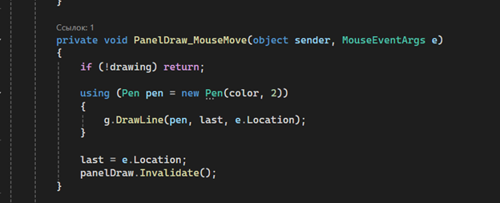
Окончание рисования
Когда кнопка мыши отпускается (MouseUp), устанавливаем drawing = false,
прекращая рисование.
private void PanelDraw_MouseUp(object sender, MouseEventArgs e) { drawing = false; }
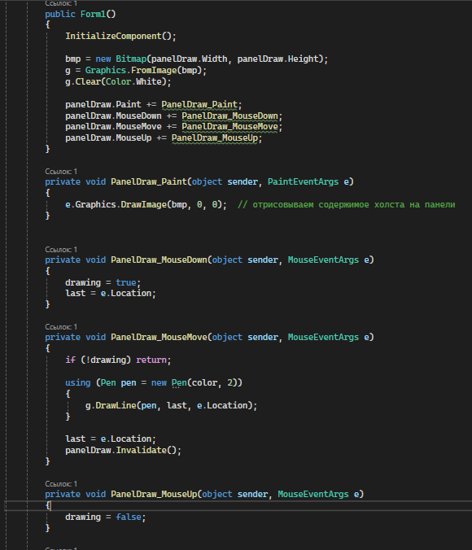
Глава 3 — Выбор цвета
Компонент ColorDialog. Добавляем на форму компонент ColorDialog (в списке «Компоненты»).
Обработчик кнопки
В buttonColor_Click
пишем код:
private void buttonColor_Click(object sender, EventArgs e) { if (colorDialog1.ShowDialog() == DialogResult.OK) { color = colorDialog1.Color; buttonColor.BackColor = color; } }
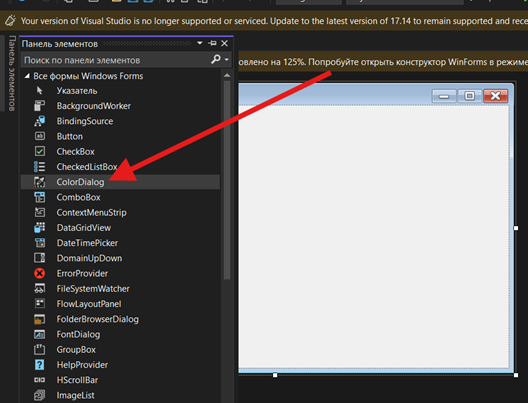
Объяснение: при нажатии на кнопку выбора цвета открывается стандартное
диалоговое окно ColorDialog. Если пользователь выбрал цвет и нажал «ОК» (что возвращает DialogResult.OK), то
выбранный цвет сохраняется в переменную color, которая
используется при рисовании линий. Также кнопка меняет свой фоновый цвет на выбранный, чтобы
пользователь всегда видел, какой цвет сейчас активен.
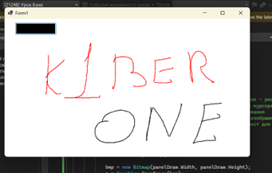
Полный код программы
using System; using System.Drawing; using System.Windows.Forms; namespace Урок_8 { public partial class Form1 : Form { private bool drawing; // флаг рисования (true - рисуем, false - нет) private Point last; // предыдущая позиция курсора private Color color = Color.Black; // текущий цвет рисования private Bitmap bmp; // холст (растровое изображение) private Graphics g; // графический контекст для рисования на холсте public Form1() { InitializeComponent(); bmp = new Bitmap(panelDraw.Width, panelDraw.Height); g = Graphics.FromImage(bmp); g.Clear(Color.White); panelDraw.Paint += PanelDraw_Paint; panelDraw.MouseDown += PanelDraw_MouseDown; panelDraw.MouseMove += PanelDraw_MouseMove; panelDraw.MouseUp += PanelDraw_MouseUp; } private void PanelDraw_Paint(object sender, PaintEventArgs e) { e.Graphics.DrawImage(bmp, 0, 0); } private void PanelDraw_MouseDown(object sender, MouseEventArgs e) { drawing = true; last = e.Location; } private void PanelDraw_MouseMove(object sender, MouseEventArgs e) { if (!drawing) return; using (Pen pen = new Pen(color, 2)) { g.DrawLine(pen, last, e.Location); } last = e.Location; panelDraw.Invalidate(); } private void PanelDraw_MouseUp(object sender, MouseEventArgs e) { drawing = false; } private void buttonColor_Click(object sender, EventArgs e) { if (colorDialog1.ShowDialog() == DialogResult.OK) { color = colorDialog1.Color; buttonColor.BackColor = color; } } } }
Заключение урока
На уроке мы создали простое приложение «Мини-рисовалку» на C# с Windows Forms. Наглядно продемонстрировали программирование графики на C# с использованием Windows Forms: от обработки событий до рисования на экране. Все шаги урока поддержаны примерами кода и пояснениями, чтобы ученики поняли и запомнили, как создаётся простая рисовалка.
- Подведение итогов. На уроке мы создали простое приложение «Мини-рисовалку» на C# с Windows Forms. Объяснили, как работают события мыши (нажатие, движение, отпускание), и как с их помощью можно реализовать рисование.
- Роль Graphics. Показали, что для рисования нужна переменная типа Graphics — это «инструмент», имеющий метод DrawLine для отрисовки линий. Узнали, как получать объект Graphics (через CreateGraphics или событие Paint).
- Цвет и дополнительные возможности. Поняли, как через ColorDialog выбрать цвет пера, и реализовали смену цвета в приложении. Кроме того, добавили (или обсудили) инструменты «ластик» и «очистка холста» для полноценной работы «Mini-Paint».
- Домашнее задание (рекомендация). Можно доработать программу: добавить выбор толщины пера, рисование фигур, кнопки сохранения/загрузки изображения или другие эффекты.